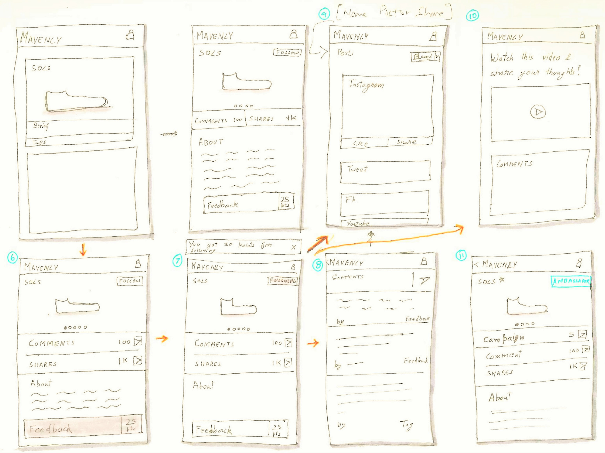

Summary: Mavenly is an influencer marketing startup with vision to have a humanized influencer marketing platform. For this project they were looking for a strategic design to scale and productize their startup while targeting millennials. We designed a strategic design around core of establishing 'brand communities.'
What is 'influencer marketing'?
In influencer marketing "rather than marketing directly to a large group of consumers, you instead target influencers to get out the word for you." These influencers can be anyone from big influencers like Selena Gomez to small bloggers or active social media users. Mavenly calls the brand influencers, advocates or ambassadors as Mavens. Why ínfluencer marketing? -| 92% | of consumers around the world say they trust recommendations from friends and family above all other forms of advertising. |
MARKET STUDY
What makes Mavenly unique?
A lot of influencer platforms are oriented around establishing a marketplace that looks more like Amazon where you can buy influencers. But this method of paying influencers to post dehumanizes the process of influencing marketing and inturn decreases the authenticity and trustability of the the reviews ( and posts) by the influencers.

USER RESEARCH
How can we make the posting process natural?
We interviewed 20 college students to understand their relationships with brands and their perspective on sponsored posts. Millennials want to feel valuable to brands and help shape products, especially when incentivized. People were more likely to post about a brand after long-term and positive brand-customer relations.

actively follow brands of their interests

want to shape products by providing feedback

strong relation with brand increases brand advocacy
Value Proposition
Mapping user needs with brand needs
User Need
actively follow brands of their interests
want to shape products by providing feedback
strong relation with brand increases brand advocacy
Brand Need
Feedback to strengthen products and marketing strategies
Increase Brand Engagement
Increase Brand Advocacy
How do you organically inspire people to write post about your brand in social media?
IDEATION
What does it take to establish loyal communities for brands?
We found that establishing strong brand community with positive relationship was a way to convert people into loyal brand advocates. Effectively productize and scale the process of building and managing Mavens by establishing stronger brand community using our platform.
{kind=link}
TESTING
How do people engage with our system?
We showed the sketches to users and asked them to think out aloud as they go through them. Users talked about how engagement time and intensity changes depending on if it is a startup or company. A lot of points helped us shape our strategy around it.USER JOURNEY
{kind=link}
DESIGN STRATEGY
Brand Awareness → Brand Advocates
We are trying to leverage increase brand engagement through community. The strategy is spread across various touchpoints in user journey.
1. First Encounter (Encouraging Adoption)
Additional Advocates could be onboarded and the cross as platform grows.
{kind=link}
{kind=link}

Let Mavenly Matchmake
2. Developing Awareness

Feed

Know the company

Following Brand
3. Increasing Engagement

Participating in discussion

Following social media

Sharing feedback
4. Spread

Gamification
{kind=link}
{kind=link}